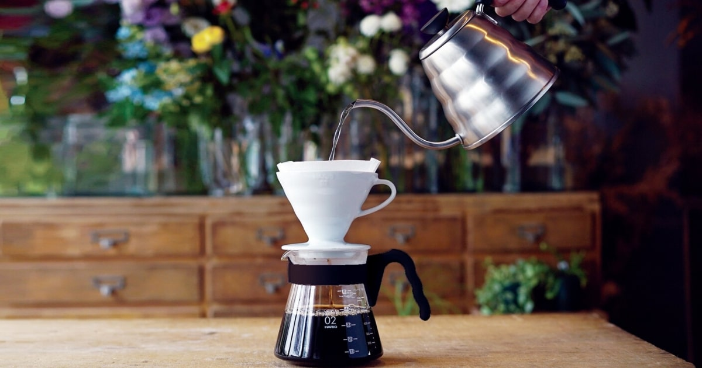

V60
Co je to V60?
Hario V60 je jedna z nejoblíbenějších příprav kávy jak mezi profesionálními baristy tak mezi domácími nadšenci. Jedná se o japonský dripper, který vznikl v Tokiu v roce 1921, jež následuje tradici porcelánových filtrů Melitta. Proč název V60? „V“ v názvu symbolizuje kornoutovitý tvar dripperu a číslo „60“ udává úhel, ve kterém je toto pomyslné „V“ sevřené.
Jedná se o perkolační metodu přípravy kávy, tedy káva se nelouhuje, ale voda je s kávou v kontaktu pouze nezbytně nutnou dobu. Pokud vás zajímá rozdíl mezi perkolací a imerzí, mohu doporučit tento článek, který podrobně rozebírá, jak se tyto metody liší.
Výsledkem této metody je výrazná káva s jasnými chuťovými tóny. Avšak tato metoda je poměrně nemilosrdná a chyby v přípravě budou ve výsledku znát. Při pečlivé přípravě vás, ale odmění opravdu skvělým šálkem kávy.
Příprava
Celý proces spočívá v kontinuálním zalévání kávy krouživými pohyby a její přefiltrování skrze filtrační papír. Díky tvaru dripperu a filtračnímu papíru voda protéká skrze kávu a zbavuje se pevných částic a části olejů, výsledkem tohoto procesu je vyvážená téměř průzračná káva.
Recept
K přípravě budeme samozřejmě potřebovat V60, filtrační papír, ideálně konvici na vodu s husím krkem a mlýnek na kávu, či již namletou kávu.
-
Ohřejeme vodu 93–97°C
Na 500ml použijeme 30g kávy. Použijeme tedy poměr 1:17.
-
Umeleme kávu
Hrubost kávy by měla být lehce jemnější než cukr krystal. Tedy středně hrubé mletí.
-
Filtrační papír
Vložíme filtrační papír do V60, prolijeme ho horkou vodou, proto abychom se zbavili papírové chuti a zároveň abychom nahřáli kornout.
-
Blooming neboli květnatění
Namletou kávu nasypeme do V60, opatrně zalijeme 60ml vody a necháme 30–40s odpočinout. Pokud je káva čerstvá všimneme si významného bublání.
-
První fáze zalévání
Krouživými pohyby zaléváme proti směru hodinových ručiček v čase 1:00 bychom měli mít nalito 55% vody tedy 275ml. Poté plynule pokračujeme v nalévání.
-
Druhá fáze zalévání
V čase 2:00 bychom měli mít nalito již 100%, tedy 500ml. Po zbytek času necháme kávu volně odkapat. Finální čas extrakce by se měl pohybovat kolem 3 minut, poté V60 odstavíme mimo.